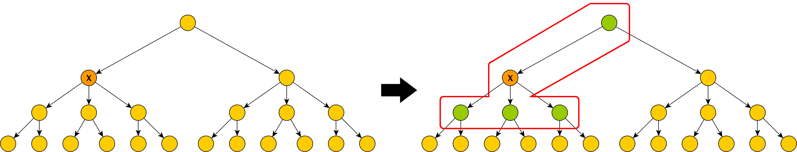
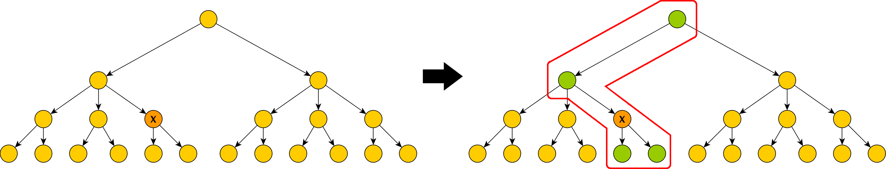

MODS-Plugin
Das MODS-Plugin erlaubt es, Dokumente des Kalliope-Verbundskatalogs über dessen SRU-Schnittstelle nach Kitodo.Production zu importieren. Dies funktioniert ähnlich zu dem Import von Dokumenten über das PicaPlugin über das Formular zum Anlegen neuer Vorgänge. Hier hat der Benutzer in dem OPAC-Pulldown-Menü nach dem Einbinden des Kalliope-MODS-Plugins neben den bisher verfügbaren Katalogen nun auch die Option „Kalliope“ zur Auswahl. Zusätzlich können über die Plugin-Konfigurationsdatei kitodo_mods_opac.xml weitere Kataloge hinzugefügt werden, die über eine Schnittstelle Datensätze im MODS-Format liefern.
Alle über Kalliope auf diese Weise importierten Dokumente werden mit dem Dokumenttyp „Bestand“ ausgezeichnet. Als Strukturdaten werden alle direkten Kind-Elemente des abgefragten Kalliope-Dokumentes sowie alle Vorfahren bis zum Bestand abgerufen und zu dem importierten Dokument hinzugefügt.
Die folgenden Beispiele verdeutlichen die beim Import von Kalliope-Dokumenten berücksichtigten Strukturelemente. Die Bäume sind hierbei eine abstrahierte Darstellung für einen Bestand in Kalliope.
Der orangene Knoten mit dem "X" kennzeichnet das Dokument, das der Benutzer zum Import ausgewählt hat.
Die grünen Knoten markieren alle Strukturelemente, die bei anschließendem Import mitberücksichtigt werden.
Beispiel 1:

Beispiel 2:

Das MODS-Plugin erlaubt es weiterhin, den Import von Dokumenten auf einzelne bestandshaltende Einrichtungen in Kalliope einzuschränken. Zu diesem Zweck wird eine weitere Auswahlliste mit den Namen aller Einrichtungen eingeblendet, wenn der Benutzer in der OPAC-Auswahl die Option "Kalliope" auswählt. Diese Liste kann über die Konfigurationsdatei des Plugins angepasst werden.
Konfiguration
Über die Datei kitodo_mods_opac.xml kann die Konfiguration des Plugins verändert werden. Die folgenden Anpassungen können dabei vorgenommen werden.
Suchfelder
Zur Zeit sind mit dem Kalliope-MODS-Plugin Suchanfragen über die Felder "Title", "Creator", "Creation Date", "Identifier", "Genre" und "Keyword" möglich. Diese Feldnamen werden bei der Suche auf die entsprechenden Kalliope-Felder abgebildet.
In der Konfigurationsdatei kann diese Feldabbildung angepasst werden. Für jede Feldabbildung existiert hierbei ein "searchField"-Element mit den Attributen "label" und "value". Hierbei enthalten die "label"-Attribute die Feldnamen, wie sie im Import-Formular von Kitodo.Production angezeigt werden, während die "value"-Attribute die Suchfeld-Parameter der SRU-Schnittstelle von Kalliope enthalten. Umschlossen werden alle "searchField"-Elemente von einem "searchFields"-Element. Die aktuelle Feldabbildung in der Konfigurationsdatei sieht folgendermaßen aus:
<searchFields>
<searchField label="Title" value="ead.title" />
<searchField label="Creator" value="ead.creator" />
<searchField label="Identifier" value="ead.id" />
<searchField label="Creation date" value="ead.creationdate.normal" />
<searchField label="Genre" value="ead.genre" />
<searchField label="Keyword" value="ead.keyword" />
</searchFields>
Eine Liste aller über die Kalliope-SRU-Schnittstelle verfügbaren Suchfelder kann auf der Seite http://kalliope.staatsbibliothek-berlin.de/de/support/cql.html eingesehen werden.
Einrichtungsfilter
Bei der Suche nach Dokumenten im Kalliope-Verbundskatalog über die Import-Oberfläche von Kitodo.Production kann die zurückgegebene Trefferliste auf einzelne bestandshaltende Einrichtungen eingeschränkt werden. Diese Einrichtungen werden dem Benutzer auf der Import-Oberfläche über ein zusätzliches Pulldown-Menü angeboten, wenn ein Katalog ausgewählt wurde, für den entsprechende Filtereinrichtungen über die Plugin-Konfigurationsdatei konfiguriert wurden.
Die Konfiguration der Einrichtungen geschieht über das Element "filterInstitutions". Dieses enthält für jede Einrichtung, die dem Benutzer auf der Kitodo.Production-Import-Oberfläche zur Einschränkung der Suchergebnisse zur Verfügung stehen soll, ein Kind-Element vom Typ "institution". Elemente vom Typ "institution" enthalten die Attribute "label" und "value". Über das "label"-Attribut werden die Namen der Einrichtungen in der Form hinterlegt, wie sie in der Import-Oberfläche von Kitodo.Production im Einrichtungsmenü angezeigt werden sollen. Das "value"-Attribut eines "institution"-Elementes enthält den Wert, der beim Anwenden der Einschränkung auf die dazugehörige Einrichtung an die angesprochene Schnittstelle übergeben wird. Diese Werte müssen mit dem im Filterparameter spezifizierten Parameter kompatibel sein, d.h. die Werte, die ein "value"-Attribut haben kann, müssen gültige Werte für den konfigurierten Filterparameter darstellen.
Im Falle von Kalliope wird die ISIL-ID einer Einrichtung verwendet, um die Suchergebnisse auf Dokumente dieser Einrichtung einzuschränken. Die Einrichtungs-Elemente nehmen in diesem Fall folgende Form an:
<filterInstitutions>
<institution label="Deutsche Nationalbibliothek" value="DE-101" />
<institution label="Universitätsbibliothek <Leipzig>" value="DE-15" />
<institution label="Sächsische Landesbibliothek - Staats- und Universitätsbibliothek <Dresden>" value="DE-14" />
<institution label="Staats- und Universitätsbibliothek Hamburg Carl von Ossietzky" value="DE-18" />
<institution label="Staatsbibliothek zu Berlin - Preußischer Kulturbesitz, Haus Unter den Linden" value="DE-1" />
</filterInstitutions>
Filterparameter
Das Feld "institutionFilterParameter" erlaubt es, über das "value"-Attribut den Namen des URL-Parameters zu konfigurieren, der zur Filterung nach einzelnen bestandshaltenden Einrichtungen bei der Abfrage einer angesprochenen Schnittstelle verwendet werden soll. Im Fall von Kalliope ist dies der Parameter "ead.repository.isil":
<institutionFilterParameter value="ead.repository.isil" />
Wird dieser Parameter verändert, müssen die "value"-Attribute der "institution"-Elemente (siehe letzter Abschnitt) entsprechend angepasst werden.
Strukturelemente
Beim Import von Datensätzen über die Kalliope-SRU-Schnittstelle werden als Strukturdaten die Elemente "Bestand", "Unterbestand" und "Manuskript" benötigt. Die Strukturdatentypen "Bestand" und "Unterbestand" sind in der aktuellen Regelsatzdatei der SLUB Dresden nicht konfiguriert und müssen daher hinzugefügt werden, um das ModsPlugin zum Import von Kalliope-Dokumenten nutzen zu können. Eine beispielhafte Konfiguration kann wie folgt aussehen:
<DocStrctType>
<Name>Inventory</Name>
<language name="de">Bestand</language>
<language name="en">Inventory</language>
<allowedchildtype>Subinventory</allowedchildtype>
<allowedchildtype>Manuscript</allowedchildtype>
<metadata num="1o">ProcessID</metadata>
<metadata DefaultDisplay="true" num="1m">TitleDocMain</metadata>
<metadata num="1o">TitleDocMainShort</metadata>
<metadata DefaultDisplay="true" num="1m">CatalogIDDigital</metadata>
<metadata DefaultDisplay="true" num="1o">shelfmarksource</metadata>
<metadata DefaultDisplay="true" num="1o">PublicationDate</metadata>
<metadata num="1o">PublicationYear</metadata>
<metadata DefaultDisplay="true" num="*">PlaceOfPublication</metadata>
<metadata num="*">Author</metadata>
<metadata num="1o">slub_ownerOrig</metadata>
<metadata num="1o">slub_ownerDigi</metadata>
<metadata num="1o">slub_licensor</metadata>
<metadata num="1o">slub_link</metadata>
<metadata num="1o">slub_linktext</metadata>
<metadata num="*">singleDigCollection</metadata>
<metadata num="*">FormatSourcePrint</metadata>
<metadata DefaultDisplay="true" num="1o">SizeSourcePrint</metadata>
<metadata DefaultDisplay="true" num="1o">TSL_ATS</metadata>
<metadata num="*">slub_project</metadata>
</DocStrctType>
<DocStrctType>
<Name>Subinventory</Name>
<language name="de">Unterbestand</language>
<language name="en">Subinventory</language>
<allowedchildtype>Subinventory</allowedchildtype>
<allowedchildtype>Manuscript</allowedchildtype>
<metadata num="1o">ProcessID</metadata>
<metadata DefaultDisplay="true" num="1o">CurrentNo</metadata>
<metadata DefaultDisplay="true" num="1o">CurrentNoSorting</metadata>
<metadata DefaultDisplay="true" num="1m">TitleDocMain</metadata>
<metadata DefaultDisplay="true" num="1o">PublicationDate</metadata>
<metadata num="1o">PublicationYear</metadata>
<metadata DefaultDisplay="true" num="*">PlaceOfPublication</metadata>
<metadata num="1o">TitleDocMainShort</metadata>
<metadata num="*">Author</metadata>
<metadata DefaultDisplay="true" num="1m">CatalogIDDigital</metadata>
<metadata num="1o">slub_ownerOrig</metadata>
<metadata num="1o">slub_ownerDigi</metadata>
<metadata num="1o">slub_licensor</metadata>
<metadata num="1o">slub_link</metadata>
<metadata num="1o">slub_linktext</metadata>
<metadata num="*">singleDigCollection</metadata>
<metadata num="*">FormatSourcePrint</metadata>
<metadata DefaultDisplay="true" num="1o">SizeSourcePrint</metadata>
<metadata DefaultDisplay="true" num="1o">shelfmarksource</metadata>
<metadata DefaultDisplay="true" num="1o">slub_footer</metadata>
<metadata DefaultDisplay="true" num="*">slub_Finance</metadata>
<metadata num="1o">slub_script</metadata>
<metadata num="*">slub_project</metadata>
</DocStrctType>
Strukturelementklassifizierung
Die Regeln zur Klassifizierung der einzelnen Strukturelemente können ebenfalls angepasst werden. Hierzu können XPath-Ausdrücke angegeben werden, die Elemente spezifizieren, die in importierten Dokumenten vorkommen müssen („mandatoryelement“) oder nicht vorkommen dürfen („forbiddenelement“), um als ein bestimmter Dokumenttyp klassifiziert zu werden. Kombinationen dieser XPath-Ausdrücke definieren eindeutige Kriterien zur Dokumenttypklassifizierung.
Die initiale Konfigurationsdatei bestimmt Regeln für die Strukturelemente „Bestand“, „Unterbestand“ und „Manuskript“.
Ein Kalliope-Dokument wird als Strukturelement "Manuskript" klassifiziert, wenn es die folgenden Kriterien erfüllt:
- im XML-Baum des Dokumentes existiert ein Element unter dem XPath
"mods/relatedItem/identifier[@type='localparentid']", welches die ID des Eltern-Dokumentes in Kalliope enthält - im XML-Baum des Dokumentes existiert ein Element unter dem XPath
"mods/typeOfResource[@manuscript='yes']"
Ein Kalliope-Dokument wird als Strukturelement "Unterbestand" klassifiziert, wenn es die folgenden Kriterien erfüllt:
- im XML-Baum des Dokumentes existiert ein Element unter dem XPath
"mods/relatedItem/identifier[@type='localparentid']", welches die ID des Eltern-Dokumentes in Kalliope enthält - im XML-Baum des Dokumentes existiert kein Element unter dem XPath
"mods/typeOfResource[@manuscript='yes']"
Ein Kalliope-Dokument wird als Strukturelement "Bestand" klassifiziert, wenn es die folgenden Kriterien erfüllt:
- im XML-Baum des Dokumentes existiert kein Element unter dem XPath
"mods/relatedItem/identifier[@type='localparentid']" - im XML-Baum des Dokumentes existiert ein Element unter dem XPath
"mods/typeOfResource[@collection='yes']"
Zur Klassifizierung müssen alle Kriterien eines Strukturtyps erfüllt sein. Damit Kalliope-Dokumente auf diese Weise eindeutig klassifiziert werden können, müssen die korrespondierenden Kriterien nicht überschneidende Mengen von Dokumenten beschreiben.
Abbildungsdatei
Über das Feld "mappingFile" kann der Name der XSLT-Datei angepasst werden, die die Abbildung von Katalog- auf Kitodo-Metadatenfelder enthält. Die Konfiguration sieht im Falle von Kalliope wie folgt aus:
<mappingFile>kalliope2kitodo.xsl</mappingFile>
Der Speicherort dieser XSLT-Datei kann in der globalen Kitodo-Konfigurationsdatei goobi_config.xml angepasst werden.
Metadatenabbildung
Die Abbildung der Metadaten von Kalliope-Dokumenten auf Kitodo-Strukturelemente kann über die Katalog-spezifische XSL-Transformationsdatei kalliope2kitodo.xsl konfiguriert werden. Diese enthält für jedes Metadatenfeld von Kalliope, das auf ein korrespondierendes Feld aus Kitodo abgebildet werden soll, ein Template. Ein XSL-Template verwendet XPath-Ausdrücke, um Elemente in einem Eingabedokument zu identifizieren, die auf bestimmte Elemente im Ausgabedokument abgebildet werden sollen. Die Syntax wird im Folgenden an einem Beispiel beschrieben:
<xsl:template match="mods:mods/mods:originInfo/mods:place/mods:placeTerm[@type='text']">
<goobi:metadata name="PlaceOfPublication"><xsl:value-of select="normalize-space()" /></goobi:metadata>
</xsl:template>
Das 'match'-Attribut eines XSL-Templates enthält den XPath-Ausdruck, der das abzubildende Element aus dem Eingabe-XML-Dokument identifiziert. Jeglicher Inhalt zwischen den öffnenden und schließenden 'xsl:template'-Tags wird an der entsprechenden Stelle in das Ausgabedokument geschrieben. Die Ausnahme dieser Regel bilden weitere Tags aus dem xsl-Namensraum. Diese stellen Kontrollstrukturen wie Schleifen oder Bedingungen dar. Im obigen Beispiel wird das Tag 'xsl:value-of' verwendet, um den Textinhalt des aktuellen Elementes des Eingabedokumentes auszulesen. Das 'select'-Attribut dieses Knotens enthält hier einen weiteren XPath-Ausdruck, über den der einzulesende Wert innerhalb des aktuellen Dokumentes weiter eingeschränkt bzw. spezifiziert werden kann. Im obigen Beispiel wird die XSL-Funktion "normalize-space" auf den leeren XPath angewendet (entspricht dem aktuellen Knoten), um führende und folgende Leerzeichen von dem Textinhalt des Elementes zu entfernen.